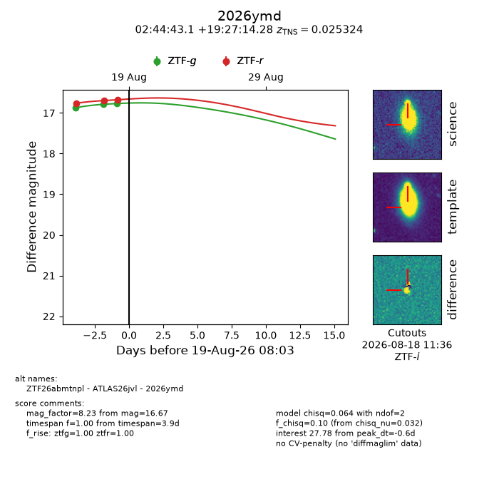
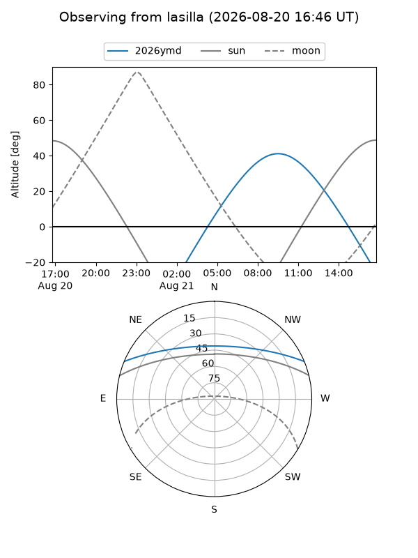
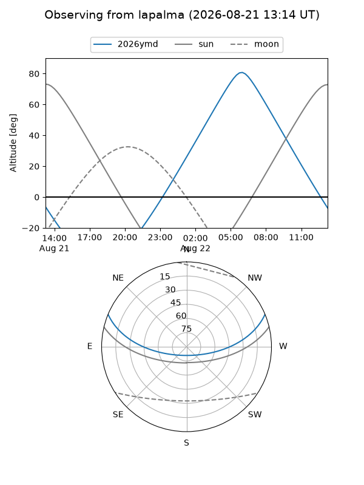
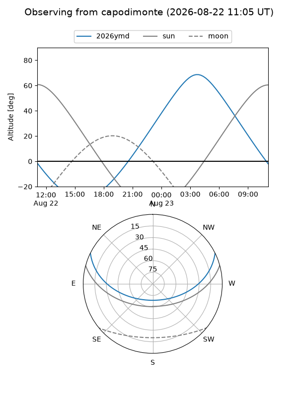
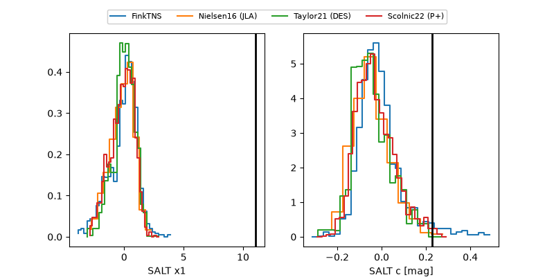

2026ymd
Target 2026ymd at 2026-08-19 08:06
Aliases and brokers:
FINK-ZTF: ztf.fink-portal.org/ZTF26abmtnpl
Lasair-ZTF: lasair-ztf.lsst.ac.uk/objects/ZTF26abmtnpl
ALeRCE-ZTF: alerce.online/object/ZTF26abmtnpl
YSE-PZ: ziggy.ucolick.org/yse/transient_detail/2026ymd
TNS name: wis-tns.org/object/2026ymd
Direct TNS query: direct search
alt names
ZTF26abmtnpl (ztf,fink_ztf)
2026ymd (tns,yse)
ATLAS26jvl (atlas)
Coordinates:
equatorial (ra, dec) = 41.1797,+19.45397
equatorial (HMS+DMS) = 02:44:43.12,+19:27:14.28
galactic (l, b) = (156.4678,-35.93534)
Flags:
TNS type: SN Ia
TNS redshift: 0.0253
peak dt: -0.6
Photometry:
last ztfg=16.77, ztfr=16.67
3 ztfg, 3 ztfr detections
Lightcurve

Visibility



Additional plots
